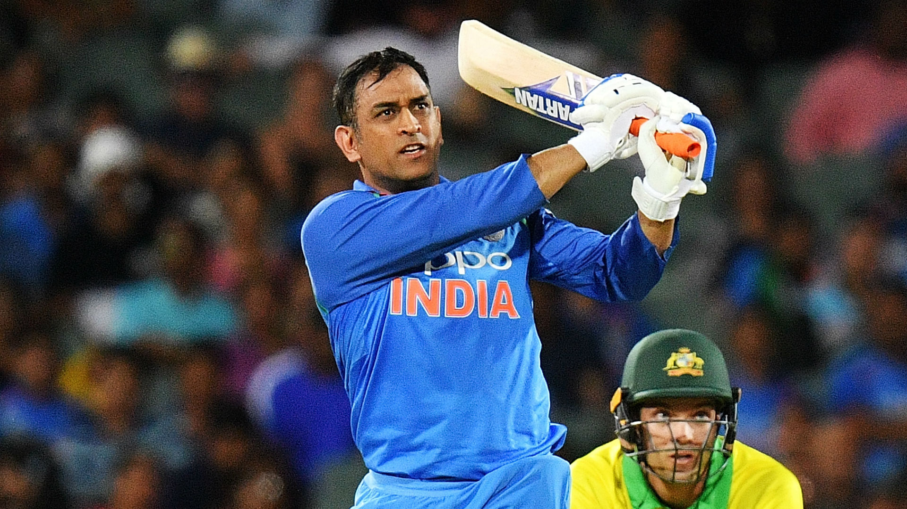
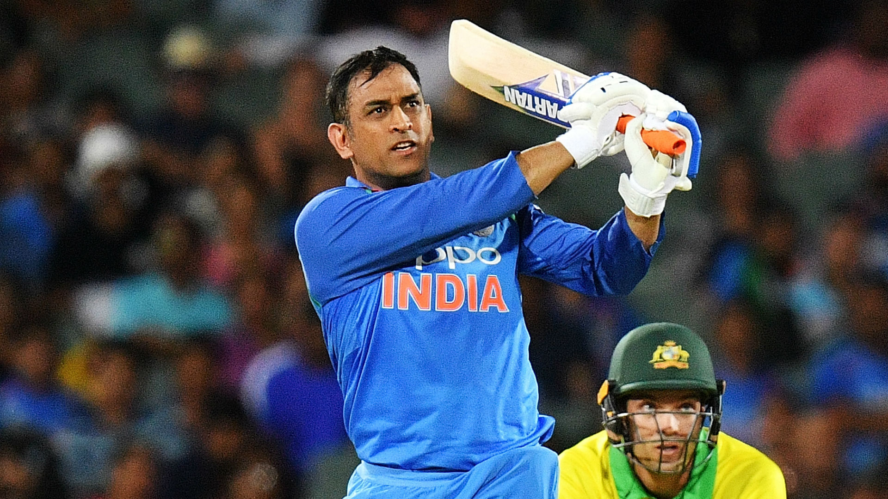
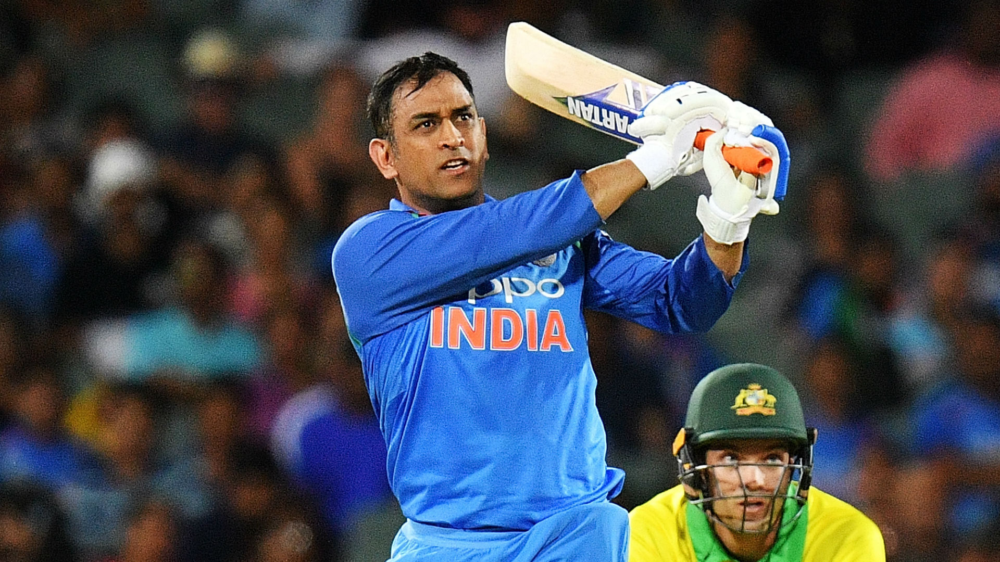
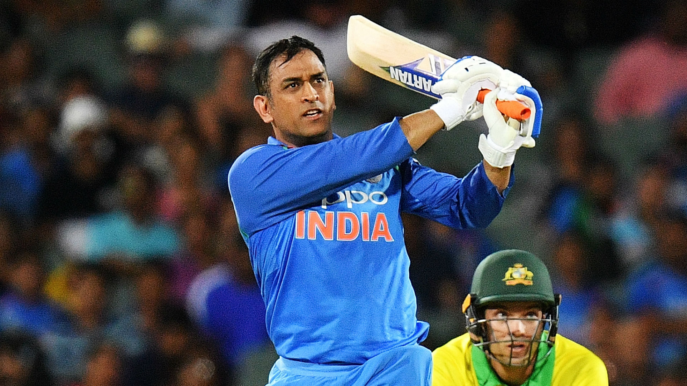

★ M.S. Dhoni (born July 7, 1981, Ranchi, Bihar [now Jharkhand] state, India) Indian cricketer whose rise to prominence in the early 21st century culminated in his captaincy of the Indian national team that won the one-day Cricket World Cup in 2011.
★ Dhoni made his international debut in 2004. His talent with the bat came to the fore in an innings of 148 runs against Pakistan in his fifth international match
★ In 2007, he became the captain of the ODI side before taking over in all formats by 2008. Dhoni retired from test cricket in 2014, but continued playing in limited overs cricket till 2019
★ He has scored 17,266 runs in international cricket including 10,000 plus runs at an average of more than 50 in ODIs.
★In the Indian Premier League (IPL), Dhoni plays for Chennai Super Kings (CSK), leading them to the final on ten occasions and winning it five times (2010, 2011, 2018, 2021 and 2023). He has also led CSK to two Champions League T20 titles in 2010 and 2014
★ In 2008, Dhoni was awarded India's highest sport honor Major Dhyan Chand Khel Ratna Award by Government of India. He received the fourth highest civilian award Padma Shri in 2009 and third highest civilian award Padma Bhushan in 2018
★ Dhoni holds an honorary rank of Lieutenant Colonel in the Parachute Regiment of the Indian Territorial Army which was presented to him by the Indian Army in 2011. He is one of the most popular cricketers in the world.
Ms. Dhoni, the former Indian cricket team captain, is admired for several qualities:
★ Leadership: Dhoni is renowned for his exceptional leadership qualities both on and off the field. His calm demeanor, strategic thinking, and ability to stay composed under pressure have earned him widespread respect.
★ Decision-making skills: Dhoni is known for his astute decision-making abilities, especially during critical moments in matches. His tactical acumen and instinctive judgment have often led the team to victory.
★ Cool-headedness: Dhoni's calm and composed nature, even in high-pressure situations, is one of his most admired traits. He maintains his composure, which not only helps him perform better but also inspires confidence in his teammates.
★ Versatility: Dhoni has showcased his versatility by excelling in various roles within the cricket team. From being a top-order batsman to a wicketkeeper-batsman and eventually a finisher, he has adapted his game to suit the team's requirements.
★ Work ethic: Dhoni's dedication to the sport and his commitment to continuous improvement are commendable. He is known for his rigorous training regimen and meticulous approach to his craft.
★ Humility: Despite his numerous achievements and fame, Dhoni remains humble and grounded. He often deflects praise onto his teammates and acknowledges their contributions to the team's success.
★ Resilience: Dhoni has faced his fair share of challenges and setbacks throughout his career but has consistently demonstrated resilience and the ability to bounce back stronger.
★ Inspiration: Dhoni serves as an inspiration to countless aspiring cricketers and individuals beyond the cricketing world. His journey from a small town to becoming one of the most successful cricketers in the world is a testament to hard work, determination, and perseverance.